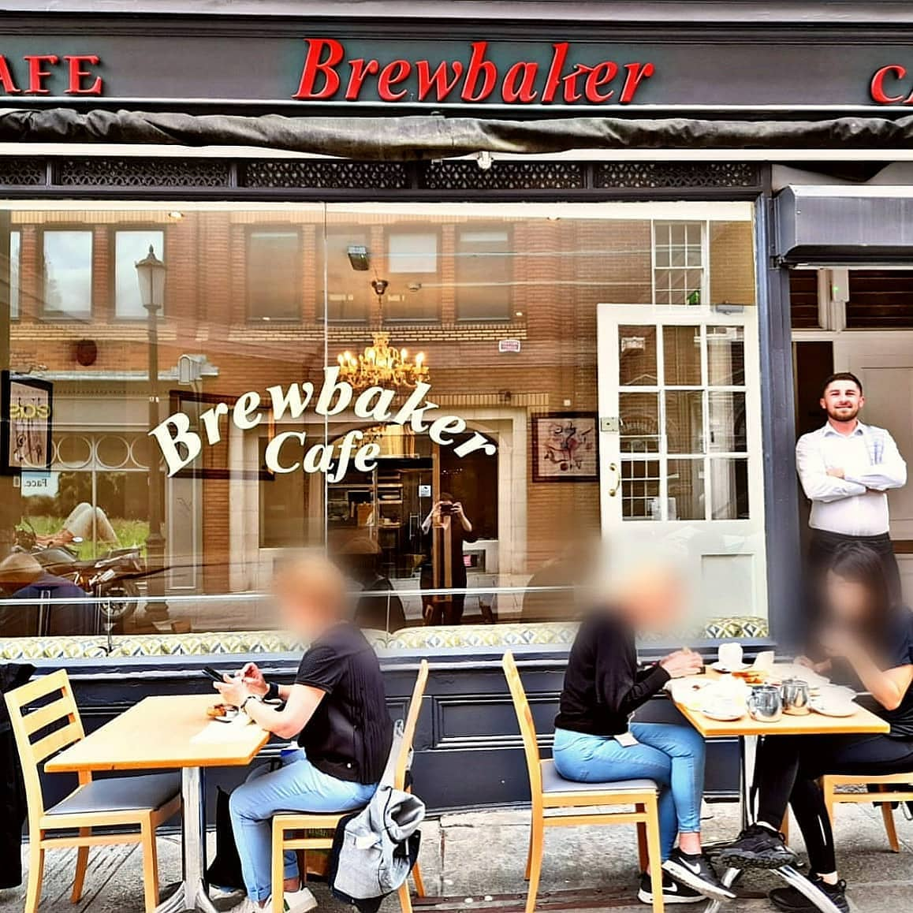
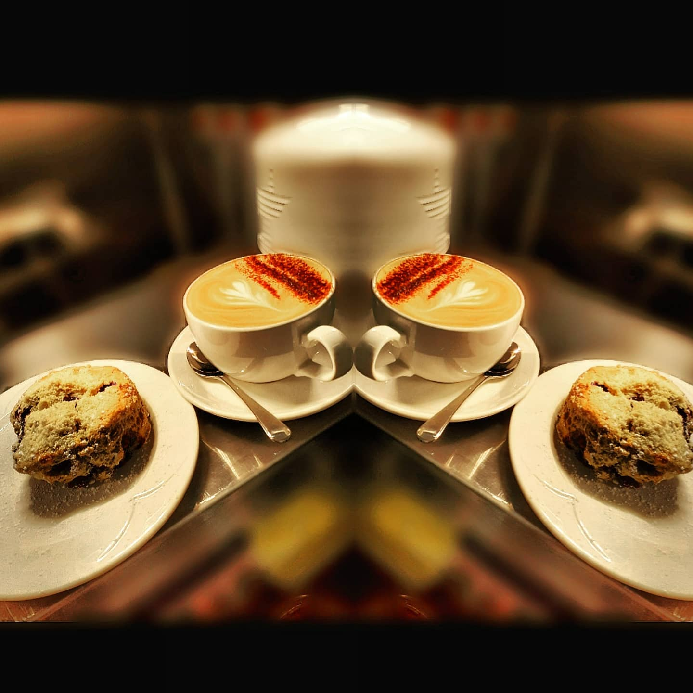

Dublin's
best-kept
sandwich
secret.
"Serving Dublin for nearly 30 years."
Lunch, 7am–5pm
18 South Frederick Street, Dublin 2

Serving Dublin for nearly 30 years.
Since circa 1995, Brewbaker Cafe has been a quiet fixture on South Frederick Street. Nestled between Trinity College and the government offices, we avoided the clamor of the digital world to focus entirely on what's in front of us: creating honest, homemade food for the people of Dublin.
Still owner-run, we believe in the kind of hospitality that remembers your order and respects your time. At the front of house, you'll be met by our incredible team—Marina, Luana, and Beatriz—who keep the soul of Brewbaker beating every morning.

Word of Mouth
We don't buy ads. We bake scones.
"Absolutely the best raspberry scone I have ever tasted."T S TripAdvisor Aug 2024
"Hands down one of the best cafes in Dublin — Everything is home made and sandwiches prepared fresh."Margaret B TripAdvisor Jul 2024
"Best scones in Dublin indeed! Best scones ever in fact. Marina and Luana are super nice and friendly."Scott Google
"The coffee was the best I have had in a long time."Una C TripAdvisor Jul 2024
Opening Ledger
- Monday 7:00 – 17:00
- Tue–Thu 9:00 – 17:00
- Friday Closed
- Saturday 7:00 – 16:00
- Sunday Closed
* Friday closure is a feature, not a bug.
Just off Dawson Street.
Follow the smell of fresh coffee and baking scones down South Frederick Street.
Get Directions